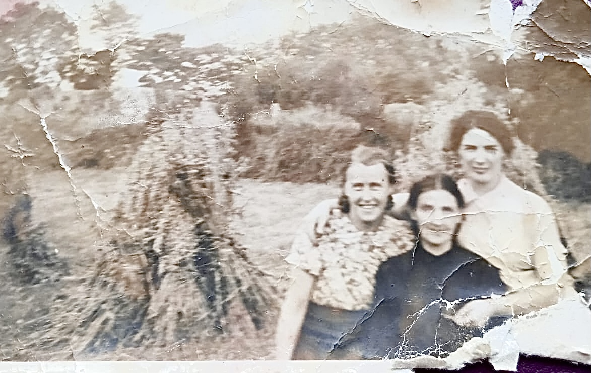
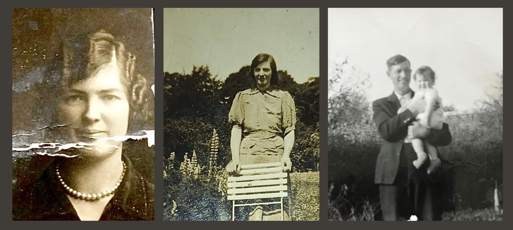
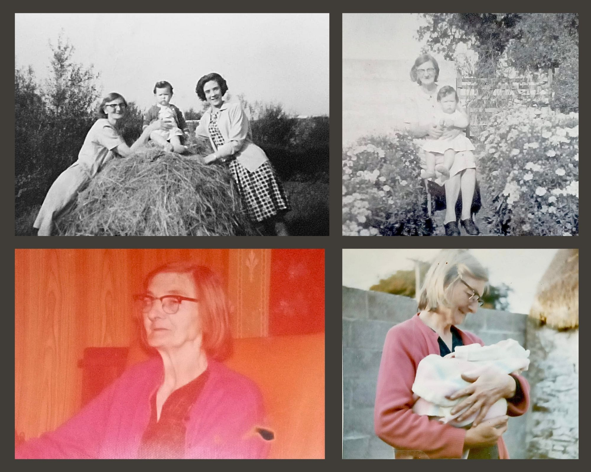
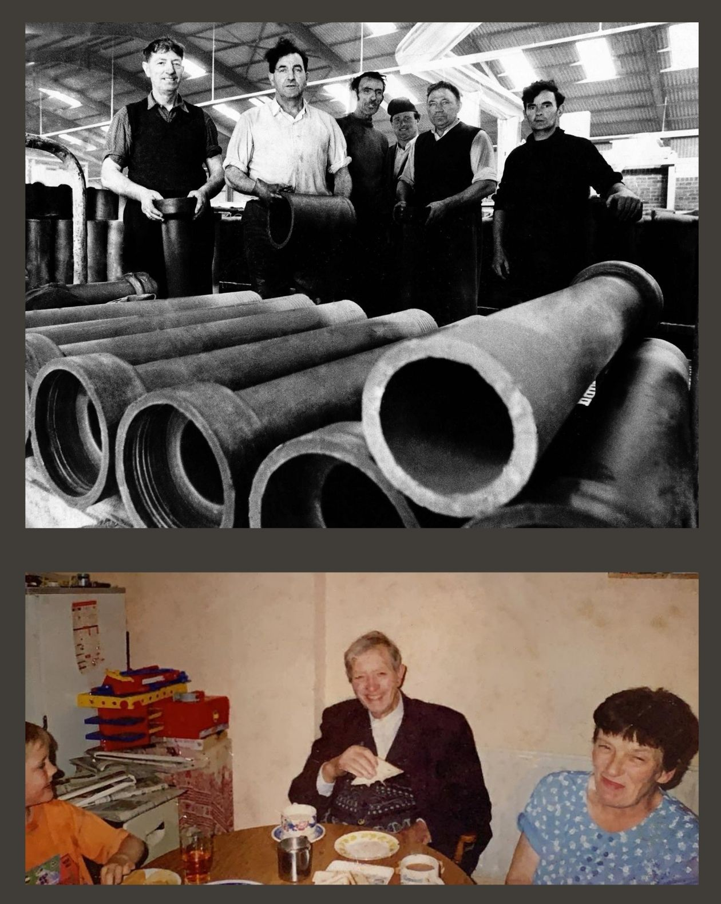
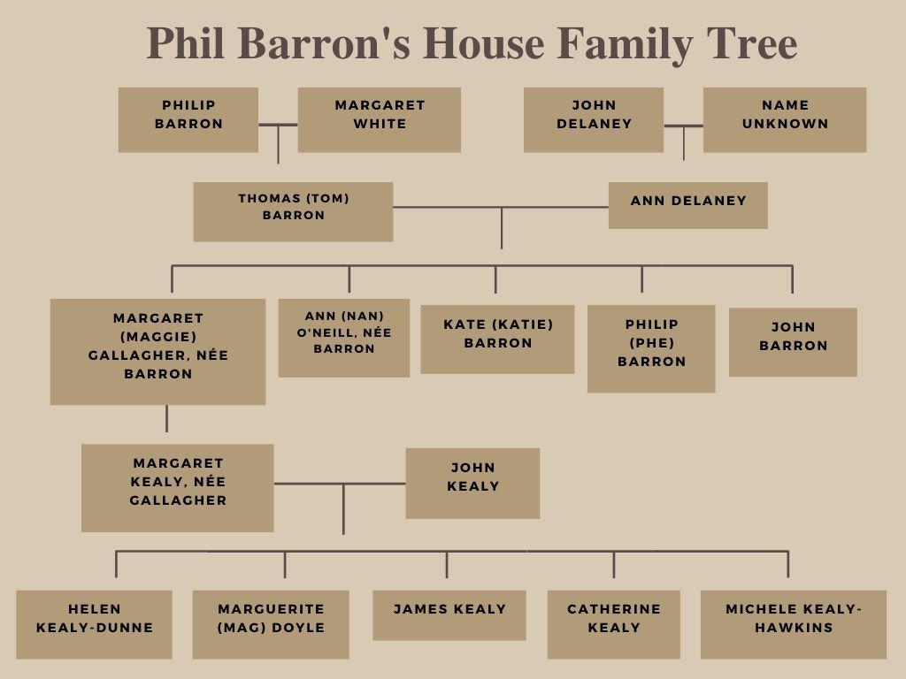
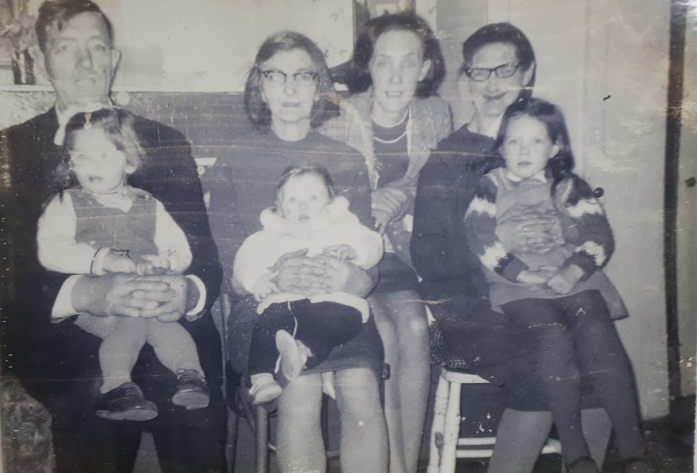
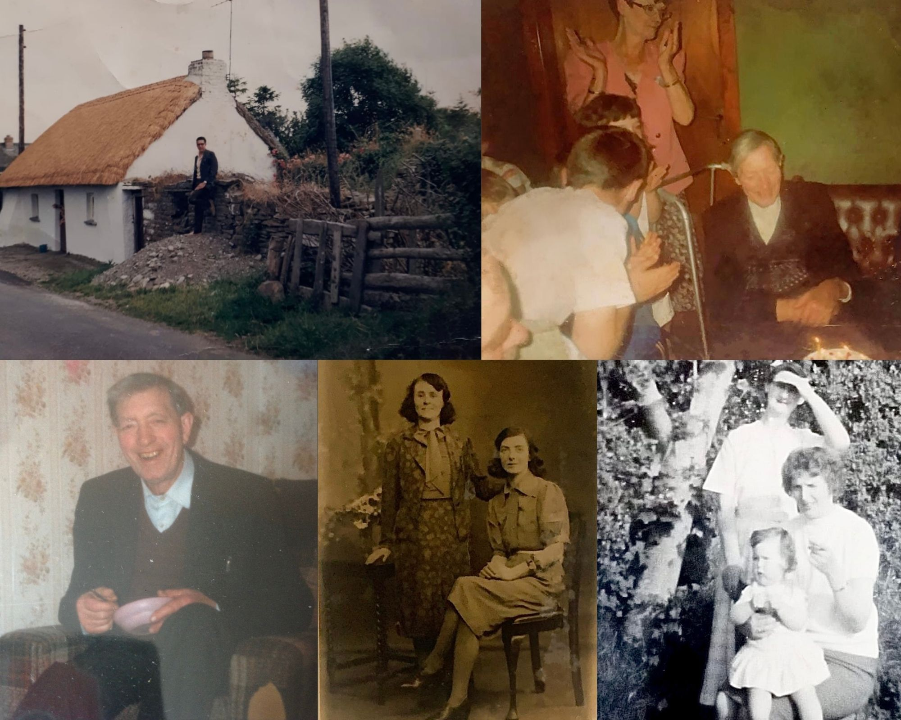

Tracing the Family Line to the Present Family
The whole family stayed together in the house until the early 1920s when Maggie emigrated to America. She lived in Springfield, Massachusetts where she worked as a housekeeper for an Irish-American family there. She returned home to see her parents in 1938 but when World War II broke out, she decided to stay with her family. Tom and Ann’s children resided together in the cottage even after their parents’ death.

Ann Barron (front) and Maggie Barron (right) with friend
Maggie later moved to Dublin where she married but left in 1942 with her six-week-old daughter, having separated from her husband. She returned to this little house by the river to live with her family, and raise her daughter with them.
Their sister, Ann (Nan) got married to a local man, John O’Neill, and left the home, eventually having four daughters of her own. Their youngest brother John, who Philip would later describe as very shy and innocent, died in 1944 at the age of 28, possibly from pneumonia. Since John was shy around cameras, there are no photographs of him, but his siblings made sure to keep his memory alive with stories of their brother for his descending family members.

Maggie Gallagher, née Barron’s passport photo, Kate (Katie) Barron, Philip Barron holding Helen Kealy (the current owner of the house).
Katie Barron worked in Kilkenny, about 30km from Clogh, for the Crotty family — a well-known, entrepreneurial family who owned a popular bakery in the city. Katie took care of the Crotty children as well as cleaned and cooked for them. She would spend most of her time in Kilkenny, visiting her home in Clogh from time to time. Years later, she returned home where she lived out the rest of her days in the little old house with her family. She died in 1981, aged 72.

(Top left) Kaite Barron and Margaret Kealy with Helen Kealy (Top right) Katie Barron holding Helen Kealy.
(Bottom left) Kaite Barron (Bottom right) Katie Barron holding Catherine Kealy, Helen’s sister.
Philip Barron worked in Fleming's Fireclays, a brick factory in the neighbouring village of The Swan — about 4km from Clogh which he cycled to and from every day. It’s believed that the brick chimneys at either end of the cottage were built with ceramic pots made in the factory where Philip worked. When he wasn’t working, Philip spent many days tending to the flowers and vegetables in the adjoining garden of the house. He spent many summer evenings after work sowing potatoes, carrots, lettuce, rhubarb, onions, scallions, beetroot, cabbage, tomatoes, and radish which were all cooked in the little cottage. This house and the people who lived in it were self-sufficient with their own vegetable garden, pigs, and chickens. Everything they needed they provided themselves.

(Top) Philip Barron, Casey Dempsey, Tommy Nash, Paddy Maguire, Larry Fitzpatrick, Johnny Deighton at Fleming's Fireclays.
(Bottom) Philip Barron laughing with Ann Kealy and his great-grandnephew, James Dunne.
Tom and Ann, their children Philip, Katie, and Maggie along with Maggie’s new daughter, Margaret, all lived in the two-roomed house together. The family raised their beloved new baby as a team, helping out their much-loved daughter and sister, Maggie who was now a newly-single mother.
Margaret was raised in a unique but loving environment at home with her mother and her mother’s family. Margaret would have also spent every night sleeping in the wooden settle bed that her grandfather, Tom built decades before. Margaret’s mother, Maggie died in 1973 at the age of 68.

A brief visual of the Phil Barron House family tree. From John and Margaret Kealy's line, there are also 12 grandchildren and eight great-grandchildren.

Philip Barron holding Marguerite (Mag) Doyle, née Kealy; Katie Barron holding James Kealy; Margaret Kealy; Maggie Gallagher holding Helen Kealy-Dunne.
Eventually, Maggie’s little baby, Margaret, grew up and would soon begin growing her own family. One day, when Margaret was on her way to a local dance in Clogh, a cheeky young lad on a scooter passed her but didn’t avoid the murky puddle of water next to her. He drove straight through the pool of water, drowned Margaret, and kept driving. She would tell him off later that evening when she saw him at the same dance but he must have charmed her somewhat because they eventually started courting, got married, and had five children together.

(Top left) A visiting priest from South America outside Phil Barron’s House in the 1970s who stopped to take a photo. He later sent the photo back to the family who lived in the house. (Top right) Philip Barron.
(Bottom left) Philip Barron (Bottom middle) Katie Barron on the right with her friend, Susie Looney.
(Bottom right) Maggie Gallagher standing with her cousin, Mary Wallace (a descendent of one of the eight women originally born in the house and Maggie’s cousin) holding Helen Kealy.
In 1965, Margaret and the guy on the scooter, John Kealy, married and had a baby girl called Helen, the current owner and caretaker of the old house. Later, Margaret gave birth to Marguerite (Mag), James, Catherine, and Michele. The house is a treasure for the family and its upkeep is imperative for their family history as well as the local heritage of Clogh. Between Margaret and John’s five children, there are now 12 grandchildren and eight great-grandchildren, and almost all of them knew Philip (Phe) Barron.